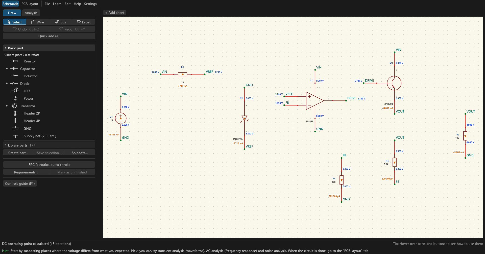
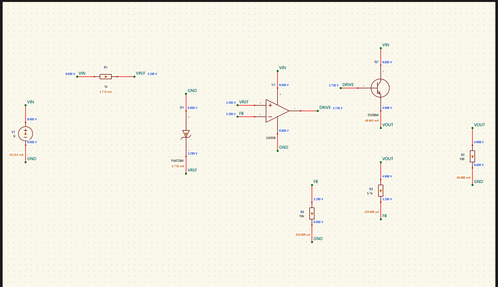
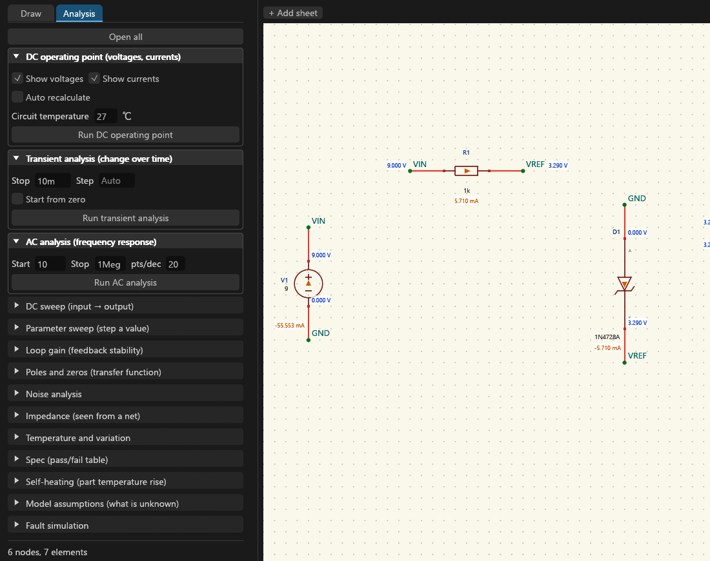
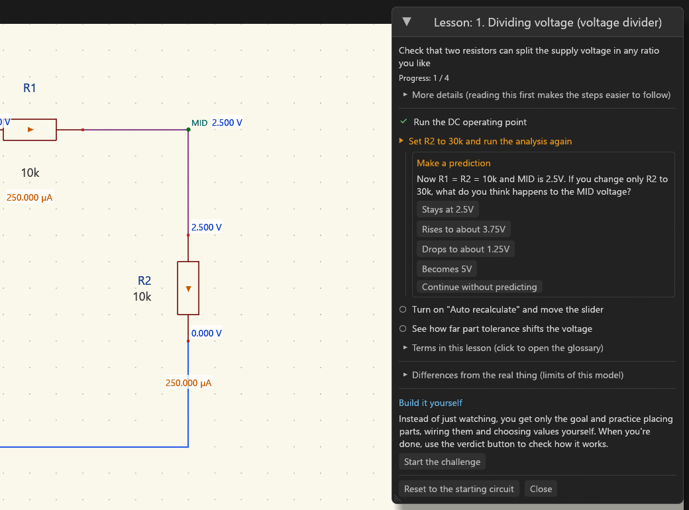
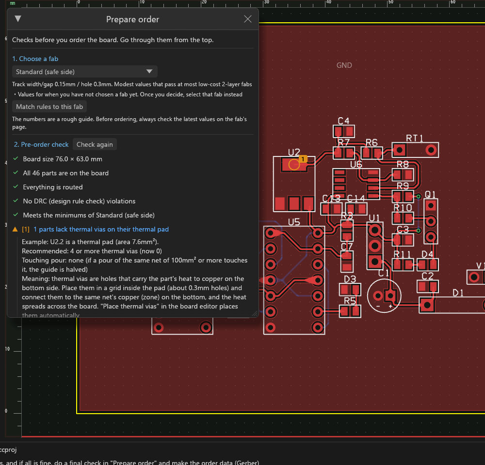
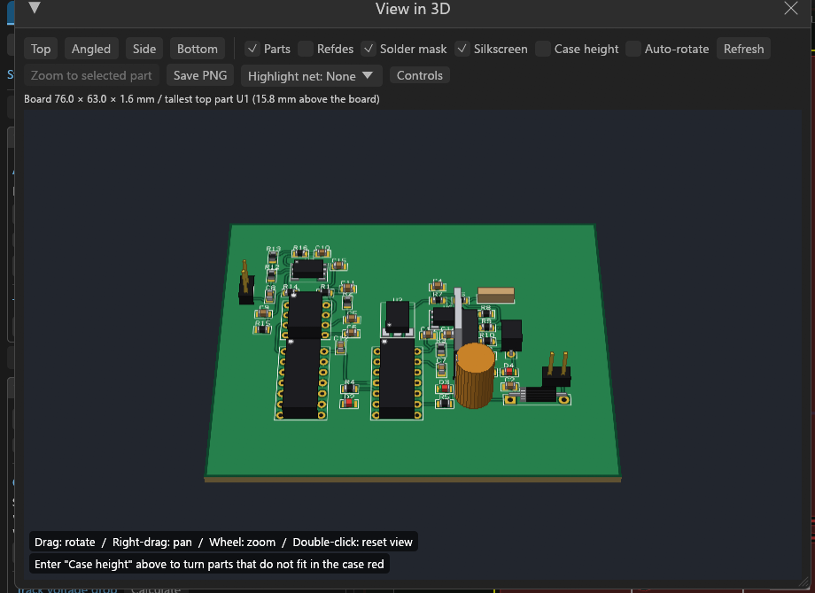
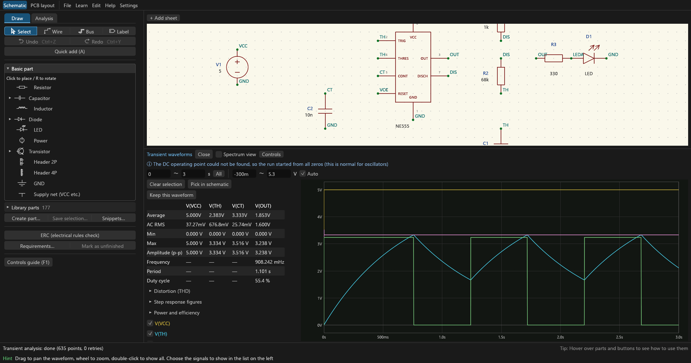
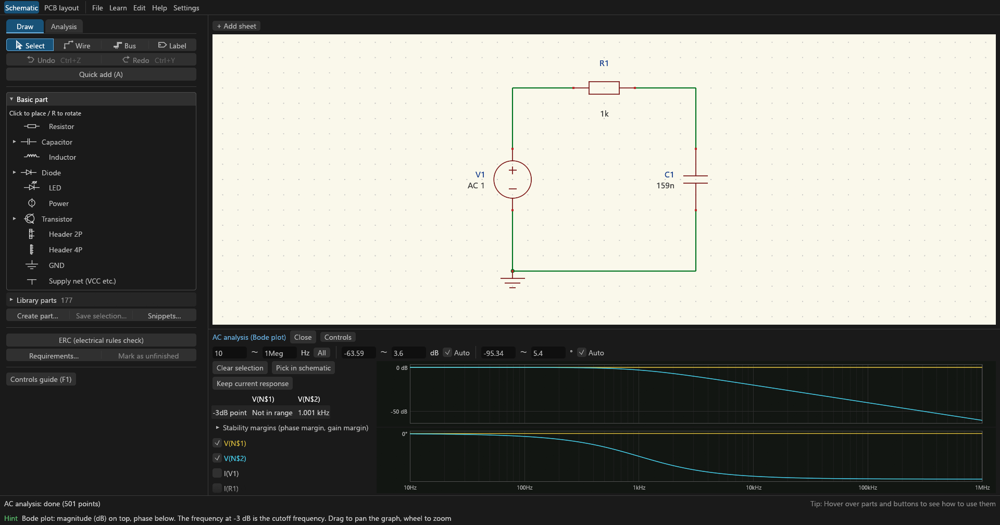
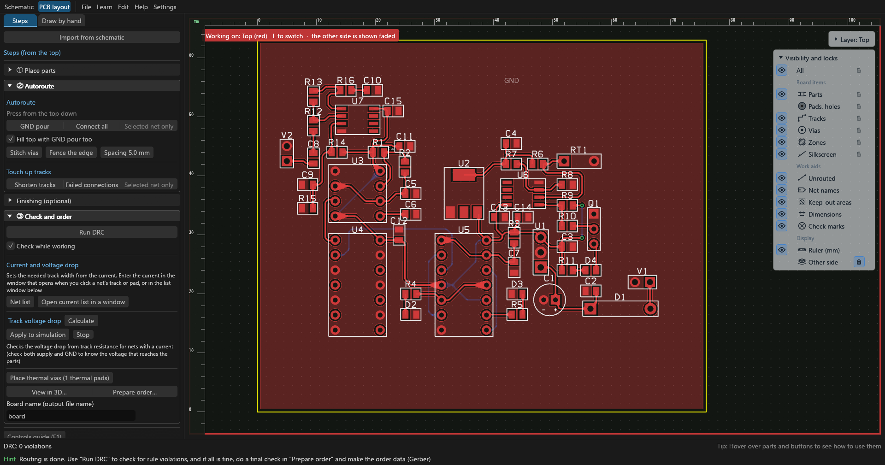
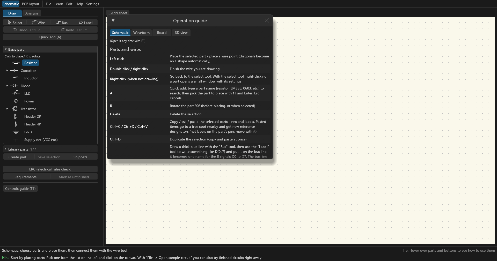

circuitCad puts schematic capture, SPICE-style simulation, PCB layout and Gerber export into one free app for people learning electronics. Go from "learning a circuit" to "trying it out" to "ordering a real board" without switching tools.
Alpha, free, no installer: unzip and run circuitCad.exe. Switch to English with Settings → Language / 言語 → English (from v0.1.0-alpha.11).
The executable is not signed, so Windows SmartScreen may warn you: choose "More info" then "Run anyway".

Every button and field has hover help. Wiring mistakes and rating problems come with the cause and how to fix it. F1 opens the operation guide.
7 learning paths, 51 step-by-step lessons, 8 board lessons and 10 "Build it yourself" challenges that check your circuit. Lessons ask you to predict first.
Open, short or reverse parts and pins and compare the results. Repair a board with a fault put in on purpose.
Voltages as wire colours and currents as arrows, right on the schematic. Analyses from DC to loop gain, noise and Monte Carlo.
Autoroute, DRC and a 3D view, then a pre-order check against JLCPCB / PCBWay / OSH Park rules and Gerber export.
More than 140 parts and 100 sample circuits. KiCad symbols, footprints and schematics can be imported.

Run an analysis and the voltages show up as wire colours and numbers, the currents as arrows, on the circuit you drew. No need to match a separate graph to the drawing.

From the DC operating point to loop gain, noise, Monte Carlo and fault simulation: each analysis is a section of the Analysis tab, with its settings next to its Run button. The full list is below.

Before showing a step, a lesson asks what you think will happen. Whether you guess right or wrong, simulating right after your guess makes the reason stick.

"Prepare order" walks you through choosing a fab, checking the board against its rules and writing the fabrication files.

Check part heights and the finished look in 3D. Enter the case height and parts that do not fit turn red.
What each analysis is for. All of them run inside the app; ngspice is not needed.
| Analysis | What it tells you |
|---|---|
| DC operating point | Every node voltage and branch current, drawn on the schematic. Set the circuit temperature. |
| Transient | Waveforms over time. The time step adapts to how sharply the waveform bends. Measurement cursors, step-response figures (rise time, overshoot, settling into ±1 % down to ±0.003 %), power and efficiency. |
| Spectrum / THD | The frequency content of a waveform (FFT) and its total harmonic distortion. |
| AC (Bode plot) | Gain and phase against frequency, with the −3 dB point. |
| DC sweep | Output against a swept input voltage (transfer curves, thresholds). |
| Parameter sweep | Steps one part value and overlays the results, to compare cut-offs or waveforms. |
| Loop gain | Feedback stability: phase margin and gain margin. |
| Poles and zeros | The transfer function's poles and zeros, for filters and control loops. |
| Noise | Output and input-referred noise, and which parts contribute most. |
| Impedance | The impedance seen from a net against frequency (a supply rail, an input). |
| Temperature and variation | Temperature effects, Monte Carlo spread from part tolerances, worst case, and the parts that matter most. |
| Spec table | Targets with pass / fail, and a column for values measured on the bench. |
| Self-heating | How hot each part gets, and how its temperature rises over time. |
| Fault simulation | Open, short, reverse or change a part or pin, and follow how far the damage spreads. |
| Digital | Gates, flip-flops, counters and shift registers with propagation delay and setup / hold checks, alongside the analog circuit. |
| Rating check | After an analysis: power, current and voltage against each part's ratings. |
Also: capacitor DC bias (capacitance lost at the working voltage), ESR / ESL, battery internal resistance and discharge, a part-value calculator that shows its steps and caveats, and SPICE netlist export for ngspice.
Grouped by area. Click a heading to open it.
D[0..7]).kicad_sym, legacy .lib), footprints (.kicad_mod) and schematics (.kicad_sch)ccadscripts, AI agents, automation



.kicad_pcb), EAGLE or LTspice import, no panelization, dark theme only, shortcuts cannot be changed.What comes next, roughly in this order. Learners' stumbling points come first.
.asc import, a graphical symbol editorThe full list (Japanese) is in docs/candidates.md, and a feature comparison with KiCad, EasyEDA, Altium and Quadcept in docs/competitor-comparison.md. Suggestions and bug reports are welcome in Issues, in English.
Almost all of the code was written by Claude (via Claude Code); the maintainer has no programming background, operates the app, checks the tests and decides what to build. The English UI text was also translated by Claude from the Japanese original. The story, in Japanese, is on Zenn.